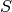
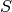
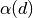
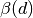
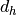
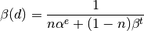

RefinePowderInstrumentParameters dialog.
Table of Contents
| Name | Direction | Type | Default | Description |
|---|---|---|---|---|
| InputPeakPositionWorkspace | Input | Workspace2D | Mandatory | Data workspace containing workspace positions in TOF agains dSpacing. |
| WorkspaceIndex | Input | number | 0 | Workspace Index of the peak positions in PeakPositionWorkspace. |
| OutputPeakPositionWorkspace | Output | Workspace2D | Output data workspace containing refined workspace positions in TOF agains dSpacing. | |
| InputInstrumentParameterWorkspace | Input | TableWorkspace | Mandatory | INput tableWorkspace containg instrument’s parameters. |
| OutputInstrumentParameterWorkspace | Output | TableWorkspace | Output tableworkspace containing instrument’s fitted parameters. | |
| RefinementAlgorithm | Input | string | MonteCarlo | Algorithm to refine the instrument parameters. Allowed values: [‘OneStepFit’, ‘MonteCarlo’] |
| RandomWalkSteps | Input | number | 10000 | Number of Monte Carlo random walk steps. |
| MonteCarloRandomSeed | Input | number | 0 | Random seed for Monte Carlo simulation. |
| StandardError | Input | string | ConstantValue | Algorithm to calculate the standard error of peak positions. Allowed values: [‘ConstantValue’, ‘UseInputValue’] |
| Damping | Input | number | 1 | Damping factor for (1) minimizer ‘Damped Gauss-Newton’. (2) Monte Carlo. |
| AnnealingTemperature | Input | number | 1 | Starting annealing temperature. |
| MonteCarloIterations | Input | number | 100 | Number of iterations in Monte Carlo random walk. |
| ChiSquare | Output | number |
This algorithm refines the instrumental geometry parameters for powder diffractomers. The parameters that can be refined are Dtt1, Zero, Dtt1t, Dtt2t, Zerot, Width and Tcross.
It serves as the second step to fit/refine instrumental parameters that will be introduced in Le Bail Fit. It uses the outcome from algorithm FitPowderDiffPeaks().
In order to do Rietveld refinement to experimental data, the diffractometer’s profile should be calibrated by the standards, such as LaB6 or Ni, with known crystal structure and lattice parameters.
For POWGEN and NOMAD, the type of the instrument profile is back-to-back exponential function convoluted with pseudo voigt of thermal neutron and epithermal neutron. It means that each diffraction peak is a back-to-back exponential,
![I\frac{AB}{2(A+B)}\left[ \exp \left( \frac{A[AS^2+2(x-X0)]}{2}\right) \mbox{erfc}\left( \frac{AS^2+(x-X0)}{S\sqrt{2}} \right) + \exp \left( \frac{B[BS^2-2(x-X0)]}{2} \right) \mbox{erfc} \left( \frac{[BS^2-(x-X0)]}{S\sqrt{2}} \right) \right].](../_images/math/69ac490e44879b8362682abf39d0249571a4f51d.png)
with peak parameter  ,
,  ,
,  and 
and 
And their corresponding peak parameters are functions described as .. math:
n_{cross} = \frac{1}{2} erfc(Width(xcross\cdot d^{-1}))
TOF_e = Zero + Dtt1\cdot d
TOF_t = Zerot + Dtt1t\cdot d - Dtt2t \cdot d^{-1}
Final Time-of-flight is calculated as:

 ,
,  ,
,  and ¶
and ¶:

:

For and  , which represent the standard deviation for pseudo-voigt
, which represent the standard deviation for pseudo-voigt

The analysis formula for the convoluted peak at 
![\Omega(TOF(d_h)) = (1-\eta(d_h))N\{e^uerfc(y)+e^verfc(z)\} - \frac{2N\eta}{\pi}\{\Im[e^pE_1(p)]+\Im[e^qE_1(q)]\}](../_images/math/e231302a425d493731959a7264c8389721c66626.png)
where

 and
and  will be calculated numerically.
will be calculated numerically.
If we can do the single peak fitting on each single diffraction peak in a certain range,
then we can divide the optimization problem into 4 sub problems for , ,
and , with the constraint on  , the ratio between thermal
and epi thermal neutrons.
, the ratio between thermal
and epi thermal neutrons.
The function to fit is
:

:

:

:

with constraint:

The coefficients in this function are strongly correlated to each other.
Only the parameters of the function for are fitted in
present implementation.
Two refinement algorithms, DirectFit and MonteCarlo, are provided.
This is a simple one step fitting. If there is one parameter to fit, Levenberg Marquart minimizer is chosen. As its coefficients are strongly correlated to each other, Simplex minimizer is used if there are more than 1 parameter to fit.
This adopts the concept of Monte Carlo random walk in the parameter space. In each MC step, one parameter will be chosen, and a new value is proposed for it. A constraint fitting by Simplex minimizer is used to fit the coefficients in new configuration.
Simulated annealing will be tried as soon as it is implemented in Mantid.
In future, constaint will be considered.
This algorithm is designed to work with other algorithms to do Le Bail fit. The introduction can be found in the wiki page of LeBailFit v1.
Categories: AlgorithmIndex | Diffraction\Fitting
C++ header: RefinePowderInstrumentParameters3.h (last modified: 2020-03-25)
C++ source: RefinePowderInstrumentParameters3.cpp (last modified: 2020-04-07)